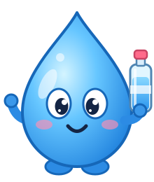

Hi! I'm Drip. 👋
I'll pop onto your screen every 45 minutes to remind you to drink water. Click I drank it! when you've had a sip, or Snooze if you need a few more minutes.
Tip: pin me to your toolbar (puzzle icon → pin) to see your countdown and today's glasses.
Drip settings
Changes save automatically.
Reminders
Turn all reminders on or off.
min
How long "Snooze" waits before reminding you again.
Character
Click corners to turn them on or off
A soft "bloop" when Drip appears.
If you don't react, Drip slips away and comes back next interval.
Schedule
For example, your working hours.
No reminders while your screen is locked or you've been inactive for 5 minutes. Drip reminds you a minute after you're back.
When Chrome isn't the active window (or the page can't show Drip), use a system notification instead.
Daily goal
glasses
ml